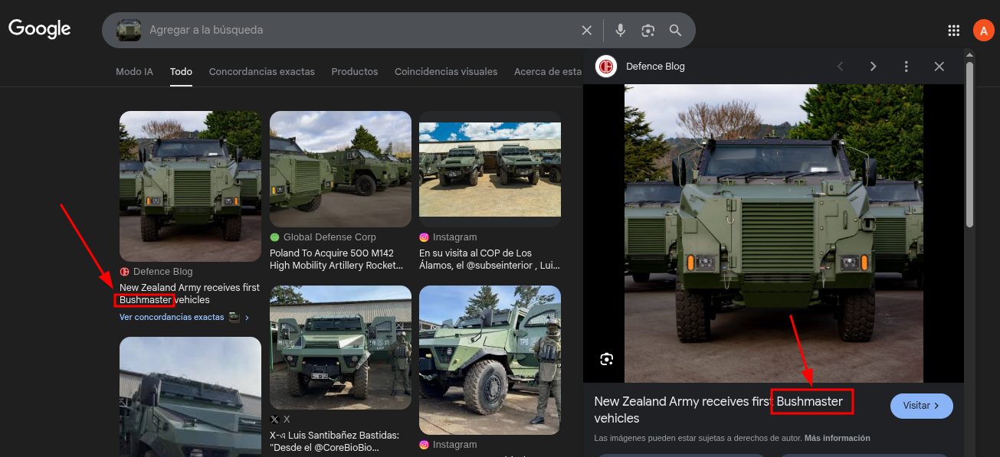
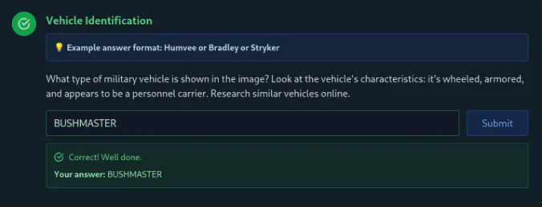
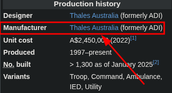
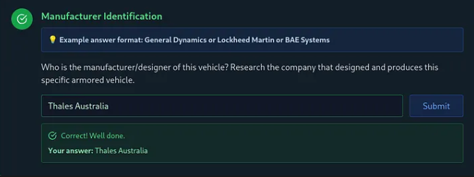
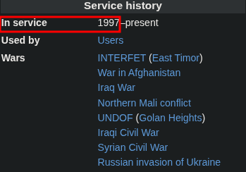
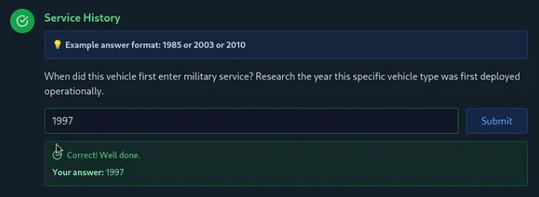
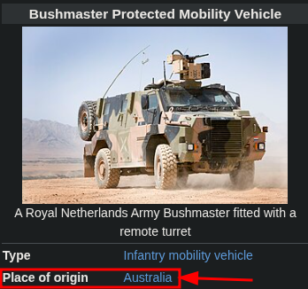
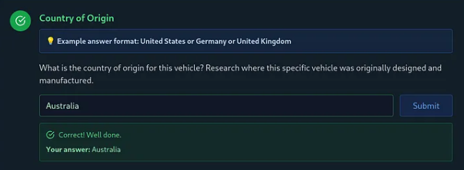
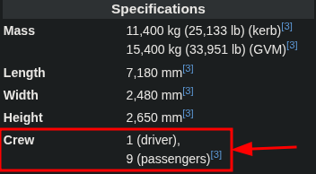
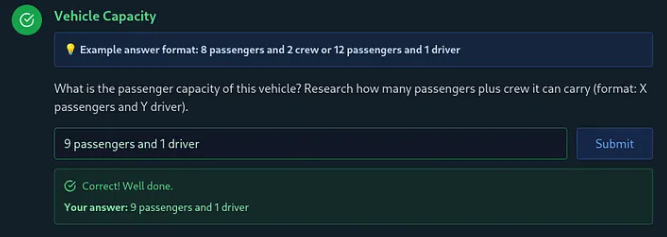

Contacto:
Instagram
ablaetneufs.reivaj@hotmail.com
En el desafío The Puppet Master de Hack The Box, se nos proporciona una imagen de un vehículo militar blindado y se nos pide identificar, usando técnicas OSINT, el tipo de vehículo, su fabricante, el año de entrada en servicio, el país de origen y la capacidad de pasajeros.
Analizamos la imagen proporcionada con una búsqueda inversa en Google Imágenes, identificando el vehículo como un Bushmaster. Como se observa en la imagen siguiente, esta búsqueda nos dio la primera flag: Modelo: Bushmaster.
 Buscamos "Bushmaster" en Wikipedia (enlace). En la sección "Production history" se indica que el fabricante y diseñador es Thales Australia, obteniendo la segunda flag. Como se ve en la captura siguiente, esta información es clara.
 En la sección "Service history" de la misma página, se confirma que el vehículo entró en servicio en 1997, dando la tercera flag. Esto se aprecia en la imagen de abajo.
 En "Place of origin" se establece que el país de origen es Australia, deducible también por el nombre Thales Australia, proporcionando la cuarta flag. Como se muestra en la figura siguiente, el país está explícitamente indicado.
 En la sección "Specifications" de Wikipedia, se detalla que el vehículo tiene capacidad para 1 conductor y 9 pasajeros, completando la quinta flag. Como se observa en la captura siguiente, las especificaciones son claras.
 